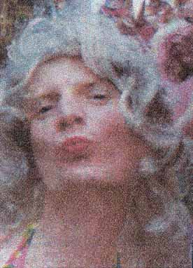

| Tove Hansen |
 |
| Tove Hansen kendt fra bla. Frøken Verden 1998, 2000 & 2002. Kulturhavn 2002, 2003, 2004 & 2005 HR&FRU dunst 2004. Booking Tove Hansen kan bookes som underholder til bla. Fødselsdage, By-Skovture og andre begivenheder i hele verden. Kontakt: Tlf: 30 88 62 44 Mobil: 24 63 04 78 e-mail: ovemaxyahoo.dk |